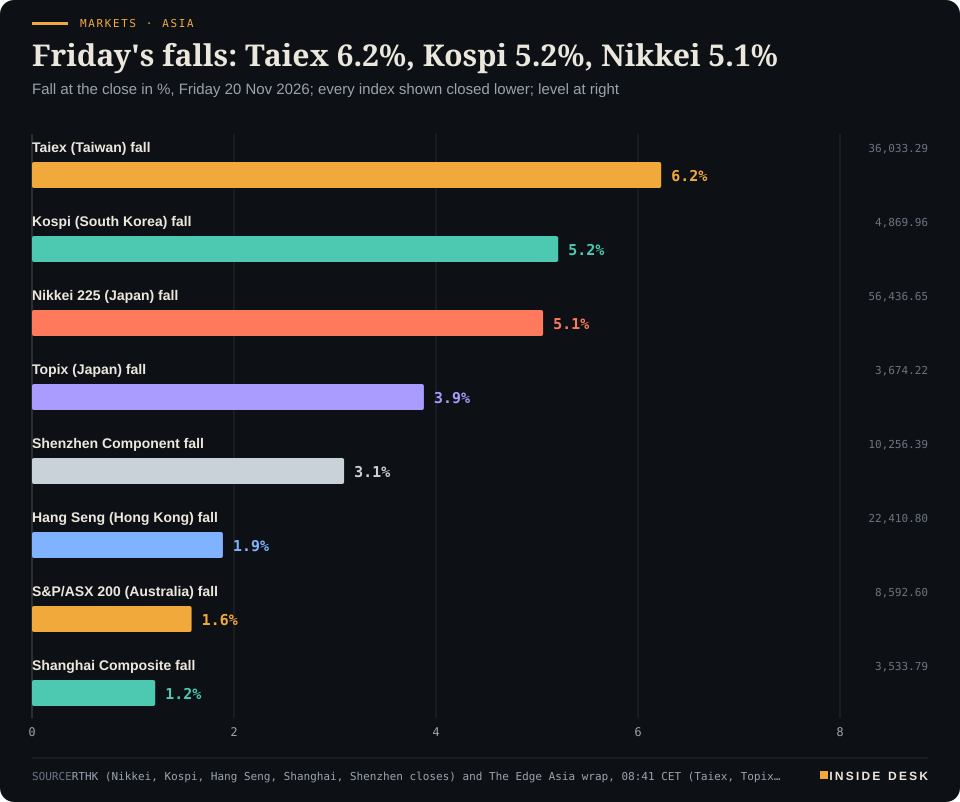
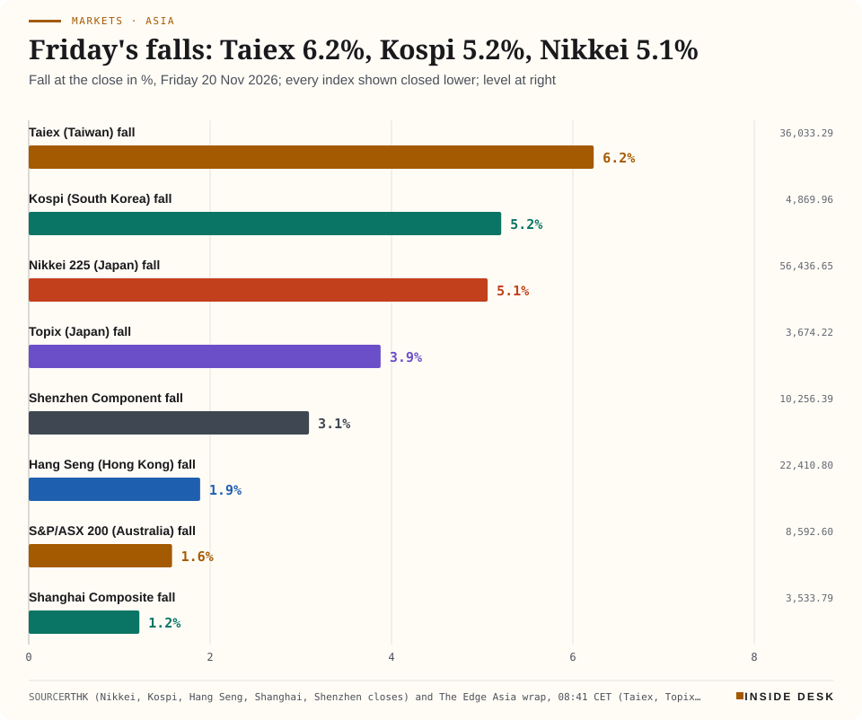
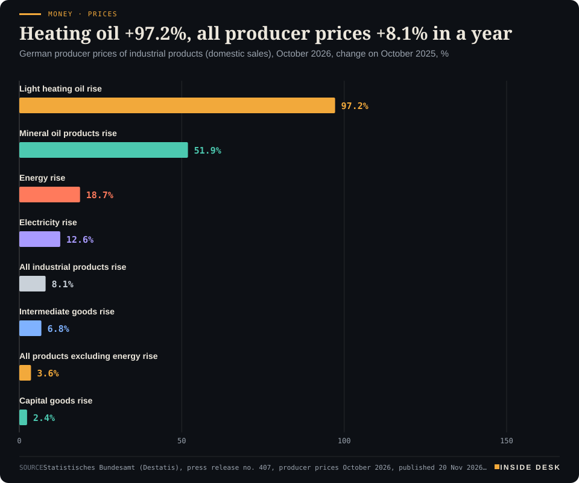
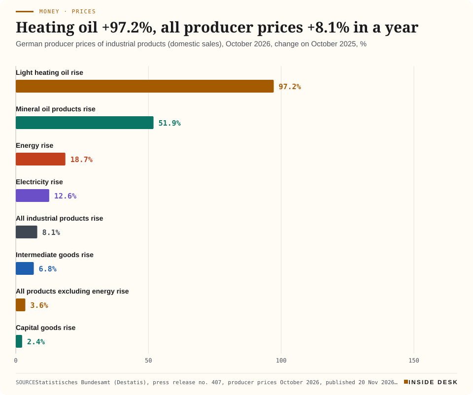

Inside Desk ePaper, Morning ePaper · Fri 20 Nov 2026
Friday, 20 November 2026Always free
Inside Desk
Morning ePaperAvailable 12:15 CET · Berlin
Lead · Markets & Macro
New York's worst day in months reached Asia overnight with interest. The selling was loud; the reasons, once you read past the tape, are slow and countable.
This morning's edition, published late at lunchtime: Asia's AI sell-off reached Frankfurt by noon while Destatis printed the slower number, producer prices up 8.1%. Also: TSMC halts advanced Chinese orders, Kyiv's night of 84 cruise missiles, the Länder stop the Kita bill, Lahore's air turns hazardous, and a Podium vs Print on who counts the costs.
Asia sold the AI story hard, Frankfurt followed by lunch, and the number that will still matter next month was the one printed at 08:00: German factories paying 8.1% more than a year ago.
Geo-economics · p. 4
Energy & Industry · p. 9
Climate & Weather · p. 15
The day in one sentenceAsia sold the AI story hard, Frankfurt followed by lunch, and the number that will still matter next month was the one printed at 08:00: German factories paying 8.1% more than a year ago.
ContentsInside Desk · Morning ePaper20 November 2026
This morning's edition, published late at lunchtime: Asia's AI sell-off reached Frankfurt by noon while Destatis printed the slower number, producer prices up 8.1%. Also: TSMC halts advanced Chinese orders, Kyiv's night of 84 cruise missiles, the Länder stop the Kita bill, Lahore's air turns hazardous, and a Podium vs Print on who counts the costs.
11 edition pieces · 11 desks · Available 12:15 CET, 20 November 2026
22 ePaper extras, added , 20 November. They appear only in the ePaper and carry their own time.
18:30 Evening ePaper, updated live until 22:30 with an “Updated” time and a Latest page
Sun 10:00 The Sunday Magazine
Berlin time. Every issue is free.
How to read it
Swipe, use the arrow keys or the page strip. Tap any headline for the reading view. Press / to search, t for contents, +/− to zoom. Download the PDF.
LeadInside Desk · Morning ePaper20 November 2026
Markets & Macro · Lead · 3 min
New York's worst day in months reached Asia overnight with interest. The selling was loud; the reasons, once you read past the tape, are slow and countable.
This is the morning edition, arriving at lunchtime. By the time you read it, Asia has closed, Europe is half a day in, and New York’s futures are where the morning’s arguments go to be settled. So instead of telling you what might happen at the open, here is what did happen, in the order it happened, and what it is made of.
New York first. On Thursday the Dow Jones Industrial Average lost 1,101.11 points, or 2.19%, to 49,097.06, its first close below 50,000 since June1. The S&P 500 fell 2.02% to 7,175.83 and the Nasdaq Composite 2.25% to 23,879.20, after the Nasdaq had been up as much as 2% earlier in the session1. CNBC noted that the averages hit their lows at the very moment Anthropic’s shares began trading; the stock opened at $111.50, 34% above its offer price, and closed up 17%1. A long-awaited listing turned into the moment people chose to take profits. That is not a judgement on one company. It is what a crowded room does when the door everyone was watching finally opens.
Then Asia, harder. Tokyo’s Nikkei 225 fell 3,007 points, or 5.06%, to 56,436, with SoftBank Group down 14.48%, Advantest 10.32%, Kioxia 11.66% and Tokyo Electron 7.06%2. The index lost 7.7% over the week2. Seoul’s Kospi closed 5.21% lower at 4,869, with Samsung Electronics down 7.01% and SK Hynix 5.92%2. Taiwan’s Taiex finished 6.23% lower at 36,033.29, and on the exchange’s own data 179 listed stocks closed limit-down; the non-electronics sub-index fell 6.12%, almost as much as electronics at 6.26%3. Hong Kong’s Hang Seng lost 1.9% and Shanghai’s Composite 1.22%, its lowest close since July 20252.
Markets · AsiaFriday's falls: Taiex 6.2%, Kospi 5.2%, Nikkei 5.1%Fall at the close in %, Friday 20 Nov 2026; every index shown closed lower; level at right


Bar chart of Friday 20 November 2026 closing falls on Asia-Pacific stock indexes, every one lower on the day: Taiex down 6.23 percent to 36,033.29, Kospi down 5.21 percent to 4,869.96, Nikkei 225 down 5.06 percent to 56,436.65, Topix down 3.88 percent to 3,674.22, Shenzhen Component down 3.09 percent to 10,256.39, Hang Seng down 1.89 percent to 22,410.80, S&P/ASX 200 down 1.58 percent to 8,592.60 and Shanghai Composite down 1.22 percent to 3,533.79.
Source: RTHK (Nikkei, Kospi, Hang Seng, Shanghai, Shenzhen closes) and The Edge Asia wrap, 08:41 CET (Taiex, Topix, ASX closes, exchange data), 20 Nov 2026; retrieved 20 Nov 2026 · reported figures · CSV
What was actually new overnight. One thing in the Asian tape was not mood. New US Commerce Department rules took effect on Thursday, and TSMC, according to two people cited by Reuters, has told staff to halt affected orders from Chinese chip designers on processes of 16 nanometres and below unless customers obtain US export licences4. TSMC said it “will comply with the new Bureau of Industry and Security regulations as applicable”4. RTHK reported that this weighed on Chinese chipmakers and on Hong Kong-listed AI model developers2. A rule with a date and a process node is a cost you can model. Much of the rest of the day was the price of not knowing.
Geo-economicsInside Desk · Morning ePaper20 November 2026
Geo-economics · 2 min
The three-leader declaration is short enough to read over coffee. What it leaves out is longer, and arrived overnight.
The declaration that Donald Trump, Vladimir Putin and Xi Jinping released after meeting in Shenzhen on Thursday has four numbered points and fits on one screen1. The three committed to “reform the UN”, said they “plan to increase the production and supply of refined petroleum products for the benefit of all nations”, agreed that the International Criminal Court and similar bodies “must not abuse their jurisdiction”, and reaffirmed that “a nuclear war cannot be won and must never be fought”, with a dialogue on nuclear risks to follow1.
Read it the way a purchasing department would. Point two is the only one with a physical product in it, and it has no volume, no date and no buyer1. Point three narrows what courts may do to state officials; point one asks the UN to change without saying how1. Point four is the most valuable and the oldest: the nuclear sentence has been said before, and is worth saying again.
What the page does not mention is Ukraine. Overnight, Russia launched 84 cruise missiles, 404 drones and an unspecified number of ballistic missiles at Ukraine, according to Ukraine’s Air Force; at least eight people were killed and three Kyiv bridges were damaged2. The day before, Putin had promised retaliation for the strike on the Crimean Bridge and said he would not negotiate ceasefires on energy or maritime trade, while Volodymyr Zelensky met Coalition of the Willing leaders in Berlin, who called for exactly those ceasefires2.
Markets read the summit too, and drew a narrower conclusion. RTHK reported that sentiment in Hong Kong and Shanghai was weighed down by signs that Washington is tightening tech curbs on China “despite meetings between the leaders” this week3. A handshake is a photograph; an export rule is a filing.
For you, the useful document from Thursday is not the declaration but the list of what it does not settle: no ceasefire, no fuel quantities, no tariff schedule. Keep that list. It is what next week’s news will be measured against.
Geo-economics · Short item · ePaper extra, added
The trade paragraph of the summit's cover text changed more than most. For European exporters and importers, that is the paragraph with a price on it.
The first draft of COP31’s cover decision called on developed countries to phase out unilateral trade measures, such as the European Union’s carbon border tax, by 2027, the Hindustan Times reported1. The second draft, released on Thursday, only notes concerns about measures with negative cross-border impacts, particularly for developing countries1.
That shift matters to anyone who trades steel, cement or fertiliser with the EU. A deadline in a UN text would not have repealed the EU’s mechanism, but it would have given its critics a date to point to. A note of concern is a sentence to quote, not a calendar.
Geo-economics · Brief · ePaper extra, added
Christine Lagarde told the Frankfurt European Banking Congress on Friday, her eighth and last appearance there as ECB president, that the ECB’s currency swap lines “will be more accessible, too”1. She said EUREP, the ECB’s repo facility for central banks, was made permanent in February and opened to central banks worldwide, and that more than 30 have expressed interest1. “A reserve manager who knows that euro securities can be turned into euro liquidity without a fire sale has more reason to hold them in normal times,” she said1.
She also noted that international card schemes handle more than 60% of euro-area card payments, and 14 of the 21 euro-area countries have no domestic scheme; if the digital-euro legislation is adopted by year-end, the ECB aims for a first issuance in 20291. Sovereignty, in central-bank language, is mostly a question of who runs the pipes.
Markets & MacroInside Desk · Morning ePaper20 November 2026
Markets & Macro · Short item · ePaper extra, added
UK retail volumes rose in October, and the ONS can name the reason: a public-readiness campaign that sent people to the long-life aisle.
UK retail sales volumes rose 0.7% in October, after a fall of 0.6% in September, the Office for National Statistics said on Friday1. They were 2.3% higher than a year earlier, and 0.4% higher over the three months to October than in the three months to July1.
The reason is unusually concrete. Supermarkets reported more sales of long-life items such as tinned goods and UHT milk after the government launched its “Be Ready” campaign on 22 October1. Clothing shops recovered from stock problems in September, and online clothing retailers credited more autumnal weather1. Fuel volumes fell back to August levels as prices rose for a third month1.
Online spending rose 1.5% on the month and was 9.7% higher than a year earlier; the online share of sales edged up to 29.2%1. The ONS reminds readers that monthly figures are volatile and should be read alongside the three-month rate1, and the survey’s response rate was 57.5%, below its recent average1.
A readiness campaign that shows up in the retail index is a small lesson in how public advice becomes private inventory. Nothing here is investment advice.
Markets & Macro · Brief · ePaper extra, added
Hong Kong’s Hang Seng ended Friday 1.9% lower at 22,410, while its tech index fell 3.8% to 3,5111. Moneycontrol reported that the intraday low took the index’s decline from its 29 January peak to about 20%, the threshold commonly used to define a bear market2. The AI model developer Minimax fell 10.8% to a record low, bringing its weekly loss above 30%, and Z.AI lost 7.2% on the day1. Shanghai and the CSI300 posted their lowest closes since July 20251.
A label like “bear market” is a convention, not a cause. The causes RTHK lists are concrete: stretched valuations, heavy capital spending on computing, and tighter US chip rules1. Nothing here is investment advice.
Politics & InstitutionsInside Desk · Morning ePaper20 November 2026
Politics & Institutions · Podium vs Print · 2 min
The Länder sent the federal Kita bill to the mediation committee on Friday. Berlin says they count too high; the bill's own schedule says the federal share shrinks by a third.
Podium
“If anything, the costs are more likely to be overestimated. (translated)”
The federal government, as summarised by the Bundesrat, In its reply to the Länder's October statement on the draft, reported on Friday 20 November 2026
Print€993 million
Federal support of about €9.2 billion for 2027 to 2034: €1.493 billion in each of 2027 and 2028, €1.243 billion in 2029, then €993 million a year from 2030 to 2034.
Startchancen and Kita quality bill, federal funding schedule, as set out by the Bundesrat, Friday 20 November 2026
The podium. On Friday the Bundesrat, by a clear majority, sent the federal bill on children’s start chances and Kita quality to the mediation committee and asked for a fundamental rework1,2. The argument is old and specific. When the Länder complained in October that Berlin was imposing duties without paying for them, the federal government, as the Bundesrat summarises it, rejected the financial demands and countered that the costs, if anything, are more likely overestimated (translated)1. The education minister Karin Prien (CDU) signalled willingness to compromise but stressed that funding day care is fundamentally the job of the Länder and municipalities, MDR reported2.
The print. The bill itself contains a schedule. Berlin would give the Länder about €9.2 billion over 2027 to 2034: €1.493 billion in each of the first two years, €1.243 billion in 2029, then €993 million a year from 2030 to 20341. The support ends in 20342. The duties do not: every child’s development would be assessed by the age of four at the latest, with targeted support built on that, and Kitas with many children in difficult circumstances would get more staff1.
The gap. Both statements can be true at once, and that is the point. Costs can be overestimated in 2027 and still exceed €993 million a year in 2031, because the assessments, the extra staff and the follow-up support are permanent while the federal share is degressive and time-limited1. The Länder call this the principle that whoever orders, pays1. Manuela Schwesig (SPD), Mecklenburg-Western Pomerania’s premier, warned that money for early education could fall away because of the new tasks2.
For you. If you have a child under four, nothing changes yet. The bill is stopped for now2. The figure to watch when the committee meets is not the total but the last line of the schedule.
Politics & Institutions · Short item · ePaper extra, added
A drafting slip put new tobacco rates into force the day after publication. Friday's fix restores the old rates until New Year. Institutions also correct themselves.
The Bundesrat on Friday approved changes to the 2026 fiscal equalisation law that also repair the recently passed tobacco tax law1. That law had unintentionally specified that its rules take effect the day after publication1. The correction restores the previous tax rates retroactively for 21 October to 31 December 2026; the increases now apply from 1 January 2027, and for cigars and cigarillos from 1 March 20271.
The same law moves money between Berlin and the Länder. …
Politics & InstitutionsInside Desk · Morning ePaper20 November 2026
The Bundestag is due to vote on the 2027 federal budget in its sitting week of 24 to 27 November, tagesschau reports1. After a session of more than 15 hours, the budget committee approved spending of about €560.9 billion, more than ever before, and net borrowing in the core budget of almost €123 billion, about €4 billion more than in the government’s first draft1. With credit-financed investment from the special funds for infrastructure and the Bundeswehr, total new debt is likely to exceed €200 billion1.
The headline is spending; the line to keep is borrowing. Spending can be cut next year. Interest on this year’s borrowing cannot.
Psychology & BehaviourInside Desk · Morning ePaper20 November 2026
Psychology & Behaviour · 2 min
A new American Psychiatric Association poll on antidepressants is less about pills than about supply: the worry users name is what happens if the next prescription does not come.
The American Psychiatric Association published a poll on Thursday about what US adults think of antidepressants, and the numbers are calmer than the debate around them1. Of 3,004 adults surveyed online by Morning Consult on 28–30 August, 67% expressed confidence in antidepressants when care is supervised by a health professional1. Among people who take or have taken them, 71% said the medication helped them manage symptoms and 70% said it made daily life easier to function in1.
The annex is in the concerns. Half of all adults picked side effects as one of their biggest worries, and 46% picked possible effects of long-term use1. Among users, 39% said side effects had interfered with daily life and 38% reported unwanted changes in mood or emotion1. These are not small minorities, and the APA does not hide them1.
The line that deserves a second look is about access. Among people currently taking antidepressants, 84% said they would be very or somewhat concerned about the effect on their mental health if they could no longer access their medication1. Asked for their top priorities, 30% of all respondents chose making mental health care easier to access and more affordable1. That is a supply-chain worry dressed as a psychology figure: it is about prescriptions, appointments, insurance and pharmacy shelves, not about serotonin.
For context, the CDC estimates that about 11% of US adults took prescription medication for depression in 2023, as the APA notes1. The poll has a margin of error of about two percentage points for the full sample1.
For you. If you take a long-term medicine, the calm habit is administrative: know when the prescription runs out, and book the renewal before the last strip, not after it. Not advice, just the dull part that keeps the useful part working.
Psychology & Behaviour · Short item · ePaper extra, added
A CDC study of 17,394 adolescents finds anxiety came down from its 2022 peak but not back to where it was, and differs by region.
A study published on Thursday in the CDC journal Preventing Chronic Disease used parent reports for 17,394 adolescents aged 12 to 17 from the 2019–2024 National Health Interview Survey1. Frequent anxiety symptoms were reported for 14.5% in 2019, 22.8% in 2022 and 18.2% in 2024; frequent depression symptoms for 6.6%, 9.0% and 6.0%1.
Regional differences were significant for 17 of 21 indicators1. Frequent anxiety ranged from 16.4% in the South to 21.2% in the Midwest, frequent depression from 6.3% to 8.8% in the same two regions, and witnessed neighbourhood violence from 3.5% in the Northeast to 10.6% in the Midwest1. Lack of health insurance ranged from 1.8% in the Northeast to 7.5% in the South1.
More than 82% of Australians hide how they really feel from loved ones, according to research released by the insurer Bupa1. Anxiety (24%), insecurity (21%) and loneliness (21%) were among the hardest feelings to talk about1. While 85% believe talking therapy could be useful, only 11% are currently in therapy or receiving mental-health support, and 55% would be reluctant to speak to a therapist1. For 28% of those who have never tried it, a clearer idea of what happens in a session would make them more likely to consider it1.
It is a company survey launched with a film series, so read it as a signal, not a census1. The useful finding is the last one: sometimes the barrier is not stigma but a missing description.
Energy & IndustryInside Desk · Morning ePaper20 November 2026
Energy & Industry · 2 min
Missiles hit Riyadh again and mines are reported in Hormuz, yet Brent is heading for its third losing week. The barrels are moving, and the price has noticed.
At noon on Friday Brent crude stood at $90.67 a barrel, against $92.72 at the same time on Thursday, according to fastenergy’s market data1. Early in Asian trading it had briefly risen to $92.77 on supply worries2. Either way, Reuters reported that Brent was on course for a weekly fall of about 3.5% and US crude for almost 6%, the third losing week in a row for both2.
The fear is real. The Iran-aligned Houthi movement fired missiles at Riyadh again, and Iran’s Revolutionary Guards Navy said on Thursday that two tankers had hit naval mines in the Strait of Hormuz and were burning2. UOB analysts count attacks on tankers in the strait at “roughly one incident per day in November”2. Rakuten Securities’ Satoru Yoshida said the Riyadh attacks prompted buying2.
The flow is realer. The reason the price is falling anyway is plain: crude shipments through Hormuz have returned to roughly pre-war levels, and traders expect a supply surplus2. fastenergy’s analyst calls supply from the Middle East “astonishingly stable” despite everything (translated)1. Saxo added that risk-off sentiment from the AI sell-off is weighing on demand expectations2.
At your tank. German heating oil averaged €157.80 per 100 litres on Friday, up from €156.70 on Thursday, as the dealer passed on the slightly firmer start to the day1. The euro, at about $1.098 in the morning, did not help much1.
For you. Days like this produce two kinds of headline: attacks, which are vivid, and shipping volumes, which are not. The second kind is the one your heating bill follows. If you are filling a tank this winter, watch the weekly averages rather than the alarming nights.
Energy & Industry · Short item · ePaper extra, added
Tokyo's energy support was scaled back from September. October's price index records the hand-over from taxpayer to household.
Japan’s government scaled back its subsidies for electricity and gas from September, and October’s consumer prices show the effect, the Nikkei reported on Friday1. Electricity bills, which had been 2.4% cheaper than a year earlier in September, were 1.6% dearer in October; city gas inflation widened from 0.2% to 5.3%1. Energy added 0.2 points to overall inflation1. From July to September the government had cut a standard household’s combined electricity and gas bills by about ¥5,0001. Petrol, still subsidised, was 2.3% cheaper1.
Jiji adds the second cause: higher crude prices as tensions in the Middle East rose, which turned energy prices positive again2.
The lesson travels well. A subsidy does not remove a price; it moves who pays it, and for how long. When it ends, the index tells you within a month. Germany’s electricity-tax cut, debated this week, will be read the same way one day.
Energy & Industry · Brief · ePaper extra, added
German producers charged 30.6% more for pellets, briquettes and logs in October than a year earlier, Destatis reported on Friday1. Light heating oil was up 97.2% and natural gas in distribution 21.9% over the same period, while district heating prices were unchanged1.
The wood figure is the quiet one. Fuels compete with each other: when oil and gas jump, demand moves to substitutes, and the substitutes’ price follows. These are producer prices, not the quote your dealer gives you, but they are where that quote starts. If you heat with wood, the calm move is the same as for oil: compare a few local offers before the cold weeks, not during them.
Money, FX & CommitteesInside Desk · Morning ePaper20 November 2026
Money, FX & Committees · 2 min
Producer prices rose at their fastest pace since early 2023. Strip out energy and the figure is 3.6%: still too warm, but a different problem.
German producer prices of industrial products were 8.1% higher in October 2026 than a year earlier, Destatis reported on Friday morning1. It is the steepest annual rise since February 2023, when the figure was 13.9%, and prices rose 1.4% from September alone1.
Money · PricesHeating oil +97.2%, all producer prices +8.1% in a yearGerman producer prices of industrial products (domestic sales), October 2026, change on October 2025, %


Bar chart of the change in German producer prices of industrial products between October 2025 and October 2026, per Destatis: light heating oil up 97.2 percent, mineral oil products up 51.9 percent, energy up 18.7 percent, electricity up 12.6 percent, all industrial products up 8.1 percent, intermediate goods up 6.8 percent, all products excluding energy up 3.6 percent and capital goods up 2.4 percent. Non-durable consumer goods, not shown, were 1.3 percent cheaper.
Source: Statistisches Bundesamt (Destatis), press release no. 407, producer prices October 2026, published 20 Nov 2026, 08:00 CET; retrieved 20 Nov 2026 · dl-de/by-2-0 · CSV
Energy writes most of it. Energy was 18.7% dearer than a year ago and 3.8% dearer than in September1. Because of the war in Iran and the Middle East, mineral oil products cost 51.9% more than in October 2025; light heating oil cost 97.2% more, naphtha 76.7% and fuels 38.4%1. Natural gas in distribution was up 21.9% and electricity 12.6%, while district heating was unchanged1.
Money, FX & Committees · Short item · ePaper extra, added
Japan's core inflation rose for a second month. Inside the index, the staple that caused last year's panic has turned into this year's relief.
Japan’s consumer prices excluding fresh food were 2.2% higher in October than a year earlier, the Statistics Bureau said on Friday; headline inflation was 2.3%, and the measure that also excludes energy rose 2.2%1. Core inflation has now been positive for 62 months in a row and above 2% for two2. The median market forecast compiled by QUICK had been 2.3%3.
Money, FX & Committees · Brief · ePaper extra, added
The dollar index stood near 103.9 on Friday, its strongest since early April 2025, after eight sessions of gains and on course for a fourth weekly rise, Reuters reported1. The rally accelerated on 10 November, when hotter-than-expected US inflation reinforced bets on a Federal Reserve rate rise; markets now price a quarter-point increase in December1. The euro last bought $1.0972, near its lowest since April 2025, and sterling sat near a one-year low at $1.30941. Chicago Fed President Austan Goolsbee said evidence did not suggest inflation was heading back to 2% on its own1.
For a euro earner, a stronger dollar is a quiet surcharge on anything priced in dollars, from oil to software subscriptions. Nothing here is investment advice.
Ordinary & Inherited LifeInside Desk · Morning ePaper20 November 2026
Ordinary & Inherited Life · 2 min
The Bundesrat passed a stack of laws on Friday morning. Three of them will reach your kitchen table without anyone making a speech about it.
Line 1: the early-start pension. The Länder approved it on Friday1,2. From the birth cohort of 2020, children get a state payment of €10 a month into an individual, capital-funded retirement depot from their sixth to their eighteenth birthday, €1,440 per child in total, with no application needed1. Parents can top up by up to €6,840 a calendar year1. If they open no depot, the federal government invests the money collectively, administered by the Bundesbank1,2. It is paid out only from age 65, and cannot be borrowed against, sold or seized1.
Line 2: fewer trips to the town hall. Under the digital identities law, which passed unanimously, anyone who last applied for their identity card at 70 or older can keep using it indefinitely1. After a move you will no longer need to update your address in your passport; registering the move with the authorities is still required1. The government expects fewer in-person appointments as a result1.
Line 3: the wallet. The same law brings the European digital identity wallet, which from 2 January 2027 is meant to let you prove your identity and age, open a bank account and sign contracts from your phone1. It is free and voluntary, and analogue services stay1.
Line 4: the ceilings. The Bundesrat also approved next year’s social-insurance thresholds1. The monthly ceiling for pension contributions rises from €8,450 to €8,850; for health and long-term care insurance from €5,812.50 to €6,3751. That last jump includes an extra €300 a month on top of the usual wage-linked adjustment1. Earnings above the ceiling are not charged contributions1.
For you. If you have a child born in 2020, there is nothing to sign: the €10 arrives by itself1. If you have a parent over 70 dreading the Bürgeramt, the card in their wallet may already be their last one.
Ordinary & Inherited Life · Short item · ePaper extra, added
The aim is a cheaper licence. The tools are an app, a price register and practice with a relative, if your Land allows it.
The driving-licence reform passed by the Bundestag was on the Bundesrat’s agenda on Friday, with its transport committee recommending approval1. Its declared aim is to make the licence cheaper, digitise driving schools and cut red tape1.
Learners would no longer have to attend theory lessons at the school; they could learn entirely by app or online, and the theory test’s question catalogue would shrink1. For a car licence, today’s twelve compulsory special drives would go as a fixed number: country-road, motorway and night drives stay mandatory, but the instructor sets how many1. After passing the theory test and at least six practical lessons, learners could practise with a close person, once an instructor has briefed both; each Land decides whether to allow it, and it is to be trialled first1. …
Ordinary & Inherited Life · Brief · ePaper extra, added
Supermarkets in Great Britain reported an October uplift in emergency items such as UHT milk and tinned goods after the government’s “Be Ready” campaign launched on 22 October, the Office for National Statistics said on Friday1. Food-store volumes rose as a result, and total retail volumes were up 0.7% on the month1.
A readiness cupboard is the most ordinary form of insurance: a few days of food that keeps, water, batteries, the medicines you need. Bought once, rotated slowly, it is calm rather than panic. The ONS figure suggests many households treated it that way: a bump in one month, not a run.
Tech & ComputeInside Desk · Morning ePaper20 November 2026
Tech & Compute · 2 min
A US rule took effect on Thursday; by Friday the world's largest contract chipmaker had translated it into a process-node limit. Rules work through factories, not podiums.
New rules from the US Commerce Department took effect on Thursday and removed a compliance route that had let some Chinese chip designers use advanced manufacturing without individual export licences1. Two people familiar with the matter told Reuters that TSMC has instructed that affected orders on processes of 16 nanometres and below be halted unless the customer obtains a licence1.
Chinese designers will generally be limited to older 28 nm and 40 nm processes, and only if their chips use no high-bandwidth memory and need no advanced packaging, according to TSMC guidance seen by the two sources1. Most leading AI chips are made on 7 nm or smaller1. TSMC said it “is aware of and will comply with the new Bureau of Industry and Security regulations as applicable” and does not comment on market rumours1.
The mechanics matter more than the headline. Until now TSMC could check a Chinese design’s computing power and decide whether it fell outside the controls; under the new rules, affected customers’ advanced chips are presumed to be covered1. The guidance also asks for closer scrutiny of customers’ locations, parent companies, major shareholders, packaging providers and shipping routes, including orders placed through subsidiaries in Taiwan, the US, Europe, Japan and South-East Asia1.
The market drew its own line on Friday: a semiconductor sub-index tracked by RTHK fell 3.9%, and RTHK cited TSMC’s tighter limits as one reason sentiment towards chipmakers was hurt2. The US list of approved designers includes Nvidia, AMD, Apple, MediaTek and Realtek, and no mainland Chinese firm1.
For you, this is a reminder of where technology policy actually lives: not in summit communiqués but in order forms, customer checks and the number in front of “nanometres”.
Tech & Compute · Short item · ePaper extra, added
The state attorney general is asking a securities question: did the company mislead investors about a risk it knew?
California’s attorney general Rob Bonta served an investigative subpoena on Nvidia on Thursday, related to reports of former chief executive Jensen Huang’s affair with an alleged Chinese spy1. The state’s Department of Justice is asking whether Nvidia’s advanced chips or confidential information may have gone to China and whether the company misled investors and the public1.
“The conduct of Nvidia and its former CEO raises bright red flags, including about the ways in which the company may have misled investors,” Bonta said1. “Companies cannot mislead their investors,” he added1. The Guardian reports that Nvidia has approached Arm’s chief executive Rene Haas in its search for a new CEO2.
A subpoena is a request for documents, not a finding. That is exactly why it is useful: it moves a scandal from gossip to paperwork, where it can be checked.
Tech & Compute · Brief · ePaper extra, added
The European Commission’s draft EU KIDS ACT would ban online services open to under-18s from using addictive, profiling-based recommendations, endless scrolling without a manual click, deceptive rewards, push notifications at night and unsolicited contact from strangers1. AI companions and chatbots would have to be switched off by default and must not simulate relationships in ways that create emotional dependence1. Large platforms would have to prove their services are “inherently safe”1.
The Bundesrat’s committees recommended welcoming the proposal, while asking to exempt operating-system providers and to scale duties for small forums and communities1. The design choices named in the draft are the useful part: they are things a parent can already check on a phone today.
Health & CareInside Desk · Morning ePaper20 November 2026
Health & Care · 2 min
The Bundesrat could give its view on the long-term care bill on Friday. Its committees had read the figures closely, and found the costs moving downstairs.
Long-term care in Germany has become dearer faster than demography alone would explain, the federal government says: the number of people needing care rose much more over the past decade than expected, the gap between income and spending is widening fast, and personal contributions keep rising1. Its answer is the care reorganisation bill, on which the Länder could comment in the Bundesrat on Friday1.
What the bill does. The contribution ceiling of long-term care insurance would rise by €300 a month, as it already has in health insurance1. From 1 January 2028 a surcharge of 0.52% would apply for co-insured spouses and partners, with exceptions such as parents of disabled children and relatives caring at home1. The surcharge for childless members would rise by 0.3 points to 0.9% from 20271. Insured people aged 60 and over would get a “Check-up 60+” screening1. The €131 monthly relief amount now available in care grades 1 to 5 would be abolished and replaced from grade 2 by a “social-space budget” that people can spend on what they need; for under-25s it would be up to €300 a month1. Existing care grades are protected1.
What the committees found. The Bundesrat’s health committee asked that non-insurance benefits such as pension contributions for family carers be paid from taxes rather than contributions1. It criticised that grade 1 would lose the relief amount, which it said contradicts the bill’s preventive aim and burdens family carers1. The labour and social affairs committee warned the change could “massively weaken” low-threshold everyday support, and, with the finance committee, complained that extra costs for Länder and municipalities in social assistance for care are not covered by Berlin1.
For you. If someone in your family has care grade 1 and uses the €131 for a cleaner or a day out, that is the line to watch in the Bundestag. The rest of the reform is about who pays; that one is about who loses a service.
Health & Care · Short item · ePaper extra, added
On the eve of Friday's Bundesrat session, the federal government put concessions in writing. The dispute that remained was the oldest one: who pays for the ambulances.
Before Friday’s Bundesrat decision on whether to send the emergency-care reform to the mediation committee, the federal government offered the Länder a written protocol declaration, the Deutsches Ärzteblatt reported on Thursday1. In it, Berlin promises to require, in a later law, the agreement of each Land’s hospital-planning authority when sites for integrated emergency centres are chosen, with arbitration if no agreement is reached1.
Health & Care · Brief · ePaper extra, added
Pfizer is experiencing a temporary supply shortage of its Covid-19 vaccine for people aged 12 and over because of higher-than-expected demand, North Carolina’s immunisation programme told providers1. Orders placed on or after 10 November may be delayed for the next few weeks, affecting both public and private orders, and Pfizer expects to start filling delayed orders as more vaccine becomes available by the end of November1. The vaccine for children aged 5 to 11 is not affected1.
Moderna’s and Sanofi’s vaccines for over-12s remain available without shipping delays1. Shortages are rarely solved by speeches; they are solved by having more than one factory on the order form.
Security & OrderInside Desk · Morning ePaper20 November 2026
Security & Order · 2 min
Ukraine's air defences stopped most of what was fired. What got through hit the things a city runs on: bridges, heat, water.
Russia launched an hours-long missile and drone attack on Ukraine overnight into Friday1. Ukraine’s Air Force said Russian forces fired an unspecified number of ballistic missiles, 84 cruise missiles and 404 attack drones, and that air defences shot down or suppressed three ballistic missiles, 79 cruise missiles and 380 drones; strikes were recorded at 23 locations1.
At least eight people were killed, six of them in Kyiv, according to Prime Minister Serhii Koretskyi, and at least 28 injured1. At least three employees of Kyiv’s water utility were among the dead1. Mayor Vitali Klitschko said the Podilsko-Voskresenskyi, Southern and Darnytskyi bridges were damaged and asked residents not to drive1. The power company DTEK reported outages in five districts, with some supply restored by 09:30 local time1.
The attack reached far beyond the capital. Lviv’s mayor said two people died there and a ticket terminal at a railway station took a direct hit; in Kryvyi Rih, a drone attack cut power to boiler houses, water pumping stations and hospitals; in Kharkiv a hospital was struck and at least four people were injured1. An energy official told the Kyiv Independent, on condition of anonymity, that Russia targeted the Western Ukrainian 750-kV substation, one of the network’s most critical nodes; the extent of damage has not been made public1.
It came a day after Vladimir Putin vowed retaliation for Ukraine’s strike on the Crimean Bridge, and while he met Donald Trump and Xi Jinping in Shenzhen1. An unidentified “flying object” fell near Lipowiec in eastern Poland, Polish authorities said1.
For you, the numbers worth holding are the boring ones: how fast the water and heat come back, how quickly a bridge reopens. They measure a state’s resilience better than any count of missiles.
Security & Order · Short item · ePaper extra, added
No one was hurt. It was the second strike on a landmark in Riyadh's financial district in under two weeks.
A Houthi attack on Thursday damaged the 80-storey Public Investment Fund tower in Riyadh’s King Abdullah Financial District, shattering windows across seven to eight floors and bending sections of the metal facade, Gulf News reported1. Saudi Civil Defence said several floors and neighbouring buildings were damaged but no one was injured1. Entrances to the district were closed and people evacuated1.
It was the second attack to damage a prominent building in the district in less than two weeks, after a strike on a Saudi Aramco building on 8 November1. Reuters described the attacks as the latest blow to the kingdom in its war with the Iran-aligned Houthis, and oil traders bought briefly on the news2.
The choice of target is a message about money rather than oil: a sovereign wealth fund’s headquarters is a symbol of a country’s plan for the decades after crude. Glass can be replaced in weeks. Confidence in a financial district is rebuilt more slowly, by the dull business of insurance claims, reopened entrances and Monday mornings that go to plan.
Security & Order · Brief · ePaper extra, added
A North Rhine-Westphalia resolution on Friday’s Bundesrat agenda asks the federal government to finish the details of the KRITIS umbrella law in force since March 2026, set risk-based minimum standards for physical protection and fund resilience measures1. It cites cyberattacks, disinformation, unauthorised drone flights and sabotage of energy sites1. A Bavarian motion proposes video surveillance up to 50 metres beyond a site’s boundary, storage of footage for up to a year and the use of artificial intelligence1.
The NRW text also worries that technical data on energy sites in open map projects such as OpenStreetMap could endanger them, and wants such data published only as far as strictly necessary1. Protection matters; so does a public that can see where its grid runs. That balance is worth arguing in the open.
Climate & WeatherInside Desk · Morning ePaper20 November 2026
Climate & Weather · 2 min
Punjab's cities hit hazardous air again on Friday. The province's enforcement figures are large; the air shows how large the problem is.
Heavy smog pushed several cities in Pakistan’s Punjab into hazardous air on Friday, Dawn reported1. Lahore recorded an hourly air quality index reading of 465 between 7am and 8am local time, while Gujranwala and Multan registered 661 and 6411. A separate ranking of Pakistani cities put Lahore at 426, with Sargodha at 289 and Sialkot at 2321. Residents were advised to minimise outdoor activity, keep windows closed, wear masks outside and use air purifiers indoors1.
The machinery is running. The Punjab Environment Protection and Climate Change Department says its teams carried out 84,370 inspections of brick kilns between 1 January and 18 November, demolished 1,429, sealed 968 and registered 1,248 police cases, imposing fines of Rs178 million1. In the smog season from 1 September alone there were 29,999 visits and 519 kilns demolished1.
The scale is larger. Pakistan’s average fine-particle (PM2.5) concentration was 67.3 micrograms per cubic metre in 2025, nearly 14 times the World Health Organization’s annual guideline of 5, according to the 2025 World Air Quality Report cited by Dawn1.
Why we carry it. Smog is a climate-adjacent story about the same thing every climate story is about: what burns, where, and who counts it. Punjab’s numbers are a reminder that institutions can be busy and the air can still be hazardous, and that both facts belong in the same sentence.
For you, the takeaway is simple and unglamorous: air quality is a local statistic with a global source list. Where you live, the official monitoring network is the place to look, not the most dramatic map.
Climate & Weather · Short item · ePaper extra, added
The Antalya draft shrank by half and lost its most contested words. Whether the summit ends tonight depends on consensus, which is to say on everyone.
COP31’s second draft cover decision, published on Thursday afternoon in Antalya, runs to nine pages against Monday’s 18 and contains no explicit reference to fossil fuels, RTÉ reported1. It also drops a proposed target of at least $120 billion a year in adaptation finance by 20351. The Guardian notes the hoped-for “transition away from fossil fuels” was replaced by an “irreversible global transition” to lower emissions and climate resilience, while carbon capture and storage stays in2.
The draft still calls for adaptation finance to at least triple by 2035, without a baseline or dollar figure, and lists early-warning systems worldwide by 2027 and a 35% electricity share of final energy use by 2035 as areas for cooperation, not obligations3. Panama has written to the presidencies that it would formally object to any deal that fails eight tests, the Guardian reports2. “We didn’t come here to beg,” said Zanetor Agyeman-Rawlings, chair of the African Group of Negotiators2.
Draft texts are where ambition is traded for unanimity. The early-warning line is the one with a date and a deliverable; it is also the one most likely to save lives soonest.
Climate & Weather · Brief · ePaper extra, added
Storms brought 25 to 100 millimetres of rain to most Queensland cropping regions in the week to 18 November, likely disrupting planting and harvesting further, Australia’s agricultural economists at ABARES reported on Thursday1. ABARES’s eight-day outlook has 10 to 100 mm for New South Wales and Victoria over 19 to 26 November1. ABARES says such falls would support pasture and summer crops but “further delay winter crop harvest activities and increase the risk of grain quality downgrades”1.
Rain at harvest is the quiet climate story: no disaster, just wheat that sits wet in the paddock and is sold as feed instead of bread grade. Water allocation prices in the Victorian Murray fell from $279 to $255 per megalitre over the week1.
Back pageInside Desk · Morning ePaper20 November 2026
Before you close the tab
The day in one sentence
Asia sold the AI story hard, Frankfurt followed by lunch, and the number that will still matter next month was the one printed at 08:00: German factories paying 8.1% more than a year ago.
One thing you can do this week
Take one sheet of paper this weekend and write down four dates: when your identity card expires, when your passport does, when your next regular prescription runs out, and when your driving licence needs renewing. Nothing else. A list of expiry dates made on a quiet Saturday saves a queue on a busy Tuesday.
A habit, not advice.
What went right
Rice in Japan was 29.7% cheaper in October than a year earlier, the largest fall since comparable records began in January 1971, the internal affairs ministry's figures show 12. After last year's shortage and panic buying, the Nikkei attributes the fall mainly to easing supply and demand and to building inventories 2. It is how shortages usually end: not with a speech, but with full warehouses and a price index that says so.
In euros at home
The federal care-reform bill would raise the long-term care insurance surcharge for childless members by 0.3 points to 0.9% from 2027 3. Desk arithmetic: on a gross salary of €3,500 a month, 0.3 points is €10.50 a month, or €126 a year; on €2,500 it is €7.50 a month. Contributions stop at the ceiling, which the same bill would raise by €300 a month 3. It is still a draft, and the Bundestag decides.
Desk arithmetic on the cited figures.
Small words
Mediation committee (Vermittlungsausschuss)
When the Bundestag and the Bundesrat disagree on a law, either side can call this joint committee. Its members come from both chambers; it meets behind closed doors and proposes a compromise, which both chambers then vote on. On Friday the Länder sent the Kita start-chances bill there; it is how German federalism argues without breaking.
Commentary for information only. Not investment, legal, tax, medical or political advice. Inside Desk is free and reader-supported. Every number is sourced in the piece it appears in.
This issue has been updated.
All articles in this edition
Markets & Macro · 3 min read
Minus 5% in Tokyo, minus 6% in Taipei: Asia sells the AI story, and Frankfurt follows by lunch
New York's worst day in months reached Asia overnight with interest. The selling was loud; the reasons, once you read past the tape, are slow and countable.
This is the morning edition, arriving at lunchtime. By the time you read it, Asia has closed, Europe is half a day in, and New York’s futures are where the morning’s arguments go to be settled. So instead of telling you what might happen at the open, here is what did happen, in the order it happened, and what it is made of.
New York first. On Thursday the Dow Jones Industrial Average lost 1,101.11 points, or 2.19%, to 49,097.06, its first close below 50,000 since June1. The S&P 500 fell 2.02% to 7,175.83 and the Nasdaq Composite 2.25% to 23,879.20, after the Nasdaq had been up as much as 2% earlier in the session1. CNBC noted that the averages hit their lows at the very moment Anthropic’s shares began trading; the stock opened at $111.50, 34% above its offer price, and closed up 17%1. A long-awaited listing turned into the moment people chose to take profits. That is not a judgement on one company. It is what a crowded room does when the door everyone was watching finally opens.
Then Asia, harder. Tokyo’s Nikkei 225 fell 3,007 points, or 5.06%, to 56,436, with SoftBank Group down 14.48%, Advantest 10.32%, Kioxia 11.66% and Tokyo Electron 7.06%2. The index lost 7.7% over the week2. Seoul’s Kospi closed 5.21% lower at 4,869, with Samsung Electronics down 7.01% and SK Hynix 5.92%2. Taiwan’s Taiex finished 6.23% lower at 36,033.29, and on the exchange’s own data 179 listed stocks closed limit-down; the non-electronics sub-index fell 6.12%, almost as much as electronics at 6.26%3. Hong Kong’s Hang Seng lost 1.9% and Shanghai’s Composite 1.22%, its lowest close since July 20252.
Markets · AsiaFriday's falls: Taiex 6.2%, Kospi 5.2%, Nikkei 5.1%Fall at the close in %, Friday 20 Nov 2026; every index shown closed lower; level at right
Bar chart of Friday 20 November 2026 closing falls on Asia-Pacific stock indexes, every one lower on the day: Taiex down 6.23 percent to 36,033.29, Kospi down 5.21 percent to 4,869.96, Nikkei 225 down 5.06 percent to 56,436.65, Topix down 3.88 percent to 3,674.22, Shenzhen Component down 3.09 percent to 10,256.39, Hang Seng down 1.89 percent to 22,410.80, S&P/ASX 200 down 1.58 percent to 8,592.60 and Shanghai Composite down 1.22 percent to 3,533.79.
Source: RTHK (Nikkei, Kospi, Hang Seng, Shanghai, Shenzhen closes) and The Edge Asia wrap, 08:41 CET (Taiex, Topix, ASX closes, exchange data), 20 Nov 2026; retrieved 20 Nov 2026 · reported figures · CSV
What was actually new overnight. One thing in the Asian tape was not mood. New US Commerce Department rules took effect on Thursday, and TSMC, according to two people cited by Reuters, has told staff to halt affected orders from Chinese chip designers on processes of 16 nanometres and below unless customers obtain US export licences4. TSMC said it “will comply with the new Bureau of Industry and Security regulations as applicable”4. RTHK reported that this weighed on Chinese chipmakers and on Hong Kong-listed AI model developers2. A rule with a date and a process node is a cost you can model. Much of the rest of the day was the price of not knowing.
Frankfurt by lunch. The DAX opened 1.09% lower at 25,187.51 after Thursday’s 25,463.81 close6, and Reuters reported Infineon, Aixtron and Suss Microtec down by roughly 5 to 6% early on5. Later in the morning the index slipped below 25,000, about 2% under Thursday’s close7. It set a record of 27,001 only last week9. The CapTrader analyst Timo Emden put it in one line: against AI doubts there “seems to be no suitable medicine at the moment” (translated)5.
The other price that came out at 08:00. While screens were red, Destatis published something slower. German producer prices were 8.1% higher in October than a year earlier, the steepest rise since February 2023, and 1.4% higher than in September8. Energy was 18.7% dearer than a year ago; without energy, producer prices rose 3.6%8. This is the invoice a factory receives before it sends yours. It moves monthly, it does not care about IPOs, and it will still be there when the Nikkei has recovered or not. The Money desk has the detail and a chart.
Where that leaves you. Days like this are loud because the numbers are big and come in quick succession. The useful habit is to sort them: a share index tells you what people will pay for future profits this afternoon; a producer-price index tells you what it costs to make things this month. The first is having a bad week. The second has been having a long year. Neither is a reason to do anything before lunch.
Nothing here is investment advice.
Desk comment A market can price a decade of hope in a morning. Invoices take the decade.
Four points on one page: Shenzhen promises more diesel and fewer courts, and Kyiv gets a night of missiles
The three-leader declaration is short enough to read over coffee. What it leaves out is longer, and arrived overnight.
The declaration that Donald Trump, Vladimir Putin and Xi Jinping released after meeting in Shenzhen on Thursday has four numbered points and fits on one screen1. The three committed to “reform the UN”, said they “plan to increase the production and supply of refined petroleum products for the benefit of all nations”, agreed that the International Criminal Court and similar bodies “must not abuse their jurisdiction”, and reaffirmed that “a nuclear war cannot be won and must never be fought”, with a dialogue on nuclear risks to follow1.
Read it the way a purchasing department would. Point two is the only one with a physical product in it, and it has no volume, no date and no buyer1. Point three narrows what courts may do to state officials; point one asks the UN to change without saying how1. Point four is the most valuable and the oldest: the nuclear sentence has been said before, and is worth saying again.
What the page does not mention is Ukraine. Overnight, Russia launched 84 cruise missiles, 404 drones and an unspecified number of ballistic missiles at Ukraine, according to Ukraine’s Air Force; at least eight people were killed and three Kyiv bridges were damaged2. The day before, Putin had promised retaliation for the strike on the Crimean Bridge and said he would not negotiate ceasefires on energy or maritime trade, while Volodymyr Zelensky met Coalition of the Willing leaders in Berlin, who called for exactly those ceasefires2.
Markets read the summit too, and drew a narrower conclusion. RTHK reported that sentiment in Hong Kong and Shanghai was weighed down by signs that Washington is tightening tech curbs on China “despite meetings between the leaders” this week3. A handshake is a photograph; an export rule is a filing.
For you, the useful document from Thursday is not the declaration but the list of what it does not settle: no ceasefire, no fuel quantities, no tariff schedule. Keep that list. It is what next week’s news will be measured against.
Desk comment A declaration is a promise without an invoice attached. Wait for the invoice.
From "phase out by 2027" to "notes concerns": COP31's draft softens on carbon border taxes
The trade paragraph of the summit's cover text changed more than most. For European exporters and importers, that is the paragraph with a price on it.
The first draft of COP31’s cover decision called on developed countries to phase out unilateral trade measures, such as the European Union’s carbon border tax, by 2027, the Hindustan Times reported1. The second draft, released on Thursday, only notes concerns about measures with negative cross-border impacts, particularly for developing countries1.
That shift matters to anyone who trades steel, cement or fertiliser with the EU. A deadline in a UN text would not have repealed the EU’s mechanism, but it would have given its critics a date to point to. A note of concern is a sentence to quote, not a calendar.
The draft is not final2. The new text is nine pages against Monday’s 18, and drops other contested items too, including all references to fossil fuels and a $120 billion adaptation-finance target2. Negotiators were still consulting on the last scheduled day in Antalya1.
For you, the lesson from trade diplomacy is the usual one: watch verbs. “Phase out by” binds a calendar. “Notes” binds nobody.
Appears only in the ePaper · Commentary for information only. Not advice.
Geo-economics · Brief · ePaper extra, added
More than 30 central banks interested: Lagarde opens the euro's back office to the world
In her last speech at the Frankfurt banking congress, the ECB president promised more accessible swap lines. It is plumbing, and plumbing is power.
Christine Lagarde told the Frankfurt European Banking Congress on Friday, her eighth and last appearance there as ECB president, that the ECB’s currency swap lines “will be more accessible, too”1. She said EUREP, the ECB’s repo facility for central banks, was made permanent in February and opened to central banks worldwide, and that more than 30 have expressed interest1. “A reserve manager who knows that euro securities can be turned into euro liquidity without a fire sale has more reason to hold them in normal times,” she said1.
She also noted that international card schemes handle more than 60% of euro-area card payments, and 14 of the 21 euro-area countries have no domestic scheme; if the digital-euro legislation is adopted by year-end, the ECB aims for a first issuance in 20291. Sovereignty, in central-bank language, is mostly a question of who runs the pipes.
Appears only in the ePaper · Commentary for information only. Not advice.
Markets & Macro · Short item · ePaper extra, added
0.7% more in the shopping basket: Britain stocks up on tins and UHT milk after the government asks
UK retail volumes rose in October, and the ONS can name the reason: a public-readiness campaign that sent people to the long-life aisle.
UK retail sales volumes rose 0.7% in October, after a fall of 0.6% in September, the Office for National Statistics said on Friday1. They were 2.3% higher than a year earlier, and 0.4% higher over the three months to October than in the three months to July1.
The reason is unusually concrete. Supermarkets reported more sales of long-life items such as tinned goods and UHT milk after the government launched its “Be Ready” campaign on 22 October1. Clothing shops recovered from stock problems in September, and online clothing retailers credited more autumnal weather1. Fuel volumes fell back to August levels as prices rose for a third month1.
Online spending rose 1.5% on the month and was 9.7% higher than a year earlier; the online share of sales edged up to 29.2%1. The ONS reminds readers that monthly figures are volatile and should be read alongside the three-month rate1, and the survey’s response rate was 57.5%, below its recent average1.
A readiness campaign that shows up in the retail index is a small lesson in how public advice becomes private inventory. Nothing here is investment advice.
Appears only in the ePaper · Commentary for information only. Not advice.
Markets & Macro · Brief · ePaper extra, added
Minus 3.8% for Hong Kong tech, and about a fifth off the January peak
The Hang Seng is near the line that market convention calls a bear market. China's AI developers took the heaviest losses.
Hong Kong’s Hang Seng ended Friday 1.9% lower at 22,410, while its tech index fell 3.8% to 3,5111. Moneycontrol reported that the intraday low took the index’s decline from its 29 January peak to about 20%, the threshold commonly used to define a bear market2. The AI model developer Minimax fell 10.8% to a record low, bringing its weekly loss above 30%, and Z.AI lost 7.2% on the day1. Shanghai and the CSI300 posted their lowest closes since July 20251.
A label like “bear market” is a convention, not a cause. The causes RTHK lists are concrete: stretched valuations, heavy capital spending on computing, and tighter US chip rules1. Nothing here is investment advice.
Appears only in the ePaper · Commentary for information only. Not advice.
Politics & Institutions · 2 min read
Podium vs Print: "costs overestimated", and €993 million a year once the money tapers
The Länder sent the federal Kita bill to the mediation committee on Friday. Berlin says they count too high; the bill's own schedule says the federal share shrinks by a third.
Podium
“If anything, the costs are more likely to be overestimated. (translated)”
The federal government, as summarised by the Bundesrat, In its reply to the Länder's October statement on the draft, reported on Friday 20 November 2026
Print€993 million
Federal support of about €9.2 billion for 2027 to 2034: €1.493 billion in each of 2027 and 2028, €1.243 billion in 2029, then €993 million a year from 2030 to 2034.
Startchancen and Kita quality bill, federal funding schedule, as set out by the Bundesrat, Friday 20 November 2026
The podium. On Friday the Bundesrat, by a clear majority, sent the federal bill on children’s start chances and Kita quality to the mediation committee and asked for a fundamental rework1,2. The argument is old and specific. When the Länder complained in October that Berlin was imposing duties without paying for them, the federal government, as the Bundesrat summarises it, rejected the financial demands and countered that the costs, if anything, are more likely overestimated (translated)1. The education minister Karin Prien (CDU) signalled willingness to compromise but stressed that funding day care is fundamentally the job of the Länder and municipalities, MDR reported2.
The print. The bill itself contains a schedule. Berlin would give the Länder about €9.2 billion over 2027 to 2034: €1.493 billion in each of the first two years, €1.243 billion in 2029, then €993 million a year from 2030 to 20341. The support ends in 20342. The duties do not: every child’s development would be assessed by the age of four at the latest, with targeted support built on that, and Kitas with many children in difficult circumstances would get more staff1.
The gap. Both statements can be true at once, and that is the point. Costs can be overestimated in 2027 and still exceed €993 million a year in 2031, because the assessments, the extra staff and the follow-up support are permanent while the federal share is degressive and time-limited1. The Länder call this the principle that whoever orders, pays1. Manuela Schwesig (SPD), Mecklenburg-Western Pomerania’s premier, warned that money for early education could fall away because of the new tasks2.
For you. If you have a child under four, nothing changes yet. The bill is stopped for now2. The figure to watch when the committee meets is not the total but the last line of the schedule.
Desk comment A speech estimates. A schedule decides. Read the schedule.
Politics & Institutions · Short item · ePaper extra, added
A tax law that started too early: the Bundesrat repairs the tobacco tax, retroactively
A drafting slip put new tobacco rates into force the day after publication. Friday's fix restores the old rates until New Year. Institutions also correct themselves.
The Bundesrat on Friday approved changes to the 2026 fiscal equalisation law that also repair the recently passed tobacco tax law1. That law had unintentionally specified that its rules take effect the day after publication1. The correction restores the previous tax rates retroactively for 21 October to 31 December 2026; the increases now apply from 1 January 2027, and for cigars and cigarillos from 1 March 20271.
The same law moves money between Berlin and the Länder. The federal government gets €250 million more from the fixed VAT amount after settling earlier refugee-related aid, and its VAT share rises by €625 million in each of 2026 and 2027 at the Länder’s expense, which is how the Länder contribute to the fuel discount passed in September1. In return the Länder receive €750 million for the pact for the public health service1.
A mistake caught, fixed and paid for in the open is not a scandal. It is the system working on a Friday morning.
€560.9 billion and a vote next week: the 2027 budget's last stretch
The Bundestag votes on next year's budget in the week of 24 to 27 November. The number that matters is under the headline.
The Bundestag is due to vote on the 2027 federal budget in its sitting week of 24 to 27 November, tagesschau reports1. After a session of more than 15 hours, the budget committee approved spending of about €560.9 billion, more than ever before, and net borrowing in the core budget of almost €123 billion, about €4 billion more than in the government’s first draft1. With credit-financed investment from the special funds for infrastructure and the Bundeswehr, total new debt is likely to exceed €200 billion1.
The headline is spending; the line to keep is borrowing. Spending can be cut next year. Interest on this year’s borrowing cannot.
Appears only in the ePaper · Commentary for information only. Not advice.
Psychology & Behaviour · 2 min read
The Annex: 67% trust them, 50% fear the side effects, and 84% of users fear losing them
A new American Psychiatric Association poll on antidepressants is less about pills than about supply: the worry users name is what happens if the next prescription does not come.
The American Psychiatric Association published a poll on Thursday about what US adults think of antidepressants, and the numbers are calmer than the debate around them1. Of 3,004 adults surveyed online by Morning Consult on 28–30 August, 67% expressed confidence in antidepressants when care is supervised by a health professional1. Among people who take or have taken them, 71% said the medication helped them manage symptoms and 70% said it made daily life easier to function in1.
The annex is in the concerns. Half of all adults picked side effects as one of their biggest worries, and 46% picked possible effects of long-term use1. Among users, 39% said side effects had interfered with daily life and 38% reported unwanted changes in mood or emotion1. These are not small minorities, and the APA does not hide them1.
The line that deserves a second look is about access. Among people currently taking antidepressants, 84% said they would be very or somewhat concerned about the effect on their mental health if they could no longer access their medication1. Asked for their top priorities, 30% of all respondents chose making mental health care easier to access and more affordable1. That is a supply-chain worry dressed as a psychology figure: it is about prescriptions, appointments, insurance and pharmacy shelves, not about serotonin.
For context, the CDC estimates that about 11% of US adults took prescription medication for depression in 2023, as the APA notes1. The poll has a margin of error of about two percentage points for the full sample1.
For you. If you take a long-term medicine, the calm habit is administrative: know when the prescription runs out, and book the renewal before the last strip, not after it. Not advice, just the dull part that keeps the useful part working.
Desk comment Fear of the medicine makes headlines. Fear of the pharmacy queue makes decisions.
Psychology & Behaviour · Short item · ePaper extra, added
18.2% in 2024, 14.5% in 2019: America's teenagers and the map of their anxiety
A CDC study of 17,394 adolescents finds anxiety came down from its 2022 peak but not back to where it was, and differs by region.
A study published on Thursday in the CDC journal Preventing Chronic Disease used parent reports for 17,394 adolescents aged 12 to 17 from the 2019–2024 National Health Interview Survey1. Frequent anxiety symptoms were reported for 14.5% in 2019, 22.8% in 2022 and 18.2% in 2024; frequent depression symptoms for 6.6%, 9.0% and 6.0%1.
Regional differences were significant for 17 of 21 indicators1. Frequent anxiety ranged from 16.4% in the South to 21.2% in the Midwest, frequent depression from 6.3% to 8.8% in the same two regions, and witnessed neighbourhood violence from 3.5% in the Northeast to 10.6% in the Midwest1. Lack of health insurance ranged from 1.8% in the Northeast to 7.5% in the South1.
Two calm readings follow. First, depression symptoms are back below their 2019 level, and anxiety is well off its peak: the post-pandemic wave receded. Second, it did not recede everywhere equally, and the authors call for region-specific responses1. National averages are useful for headlines; services are built locally.
82% hide how they feel, 11% are in therapy: Australia's gap between belief and booking
A survey for the insurer Bupa finds most Australians think talking therapy could help. Very few have tried it, and many don't know what happens in the room.
More than 82% of Australians hide how they really feel from loved ones, according to research released by the insurer Bupa1. Anxiety (24%), insecurity (21%) and loneliness (21%) were among the hardest feelings to talk about1. While 85% believe talking therapy could be useful, only 11% are currently in therapy or receiving mental-health support, and 55% would be reluctant to speak to a therapist1. For 28% of those who have never tried it, a clearer idea of what happens in a session would make them more likely to consider it1.
It is a company survey launched with a film series, so read it as a signal, not a census1. The useful finding is the last one: sometimes the barrier is not stigma but a missing description.
Appears only in the ePaper · Commentary for information only. Not advice.
Energy & Industry · 2 min read
$90.67 at noon, a third weekly fall, and a tanker incident a day: oil prices the flow, not the fear
Missiles hit Riyadh again and mines are reported in Hormuz, yet Brent is heading for its third losing week. The barrels are moving, and the price has noticed.
At noon on Friday Brent crude stood at $90.67 a barrel, against $92.72 at the same time on Thursday, according to fastenergy’s market data1. Early in Asian trading it had briefly risen to $92.77 on supply worries2. Either way, Reuters reported that Brent was on course for a weekly fall of about 3.5% and US crude for almost 6%, the third losing week in a row for both2.
The fear is real. The Iran-aligned Houthi movement fired missiles at Riyadh again, and Iran’s Revolutionary Guards Navy said on Thursday that two tankers had hit naval mines in the Strait of Hormuz and were burning2. UOB analysts count attacks on tankers in the strait at “roughly one incident per day in November”2. Rakuten Securities’ Satoru Yoshida said the Riyadh attacks prompted buying2.
The flow is realer. The reason the price is falling anyway is plain: crude shipments through Hormuz have returned to roughly pre-war levels, and traders expect a supply surplus2. fastenergy’s analyst calls supply from the Middle East “astonishingly stable” despite everything (translated)1. Saxo added that risk-off sentiment from the AI sell-off is weighing on demand expectations2.
At your tank. German heating oil averaged €157.80 per 100 litres on Friday, up from €156.70 on Thursday, as the dealer passed on the slightly firmer start to the day1. The euro, at about $1.098 in the morning, did not help much1.
For you. Days like this produce two kinds of headline: attacks, which are vivid, and shipping volumes, which are not. The second kind is the one your heating bill follows. If you are filling a tank this winter, watch the weekly averages rather than the alarming nights.
Desk comment Fear sets the price for an hour. Barrels that actually arrive set it for the month.
Energy & Industry · Short item · ePaper extra, added
City gas +5.3%, electricity +1.6%: Japan's subsidy ends and the bill shows it within a month
Tokyo's energy support was scaled back from September. October's price index records the hand-over from taxpayer to household.
Japan’s government scaled back its subsidies for electricity and gas from September, and October’s consumer prices show the effect, the Nikkei reported on Friday1. Electricity bills, which had been 2.4% cheaper than a year earlier in September, were 1.6% dearer in October; city gas inflation widened from 0.2% to 5.3%1. Energy added 0.2 points to overall inflation1. From July to September the government had cut a standard household’s combined electricity and gas bills by about ¥5,0001. Petrol, still subsidised, was 2.3% cheaper1.
Jiji adds the second cause: higher crude prices as tensions in the Middle East rose, which turned energy prices positive again2.
The lesson travels well. A subsidy does not remove a price; it moves who pays it, and for how long. When it ends, the index tells you within a month. Germany’s electricity-tax cut, debated this week, will be read the same way one day.
Appears only in the ePaper · Commentary for information only. Not advice.
Energy & Industry · Brief · ePaper extra, added
Pellets, briquettes and logs 30.6% dearer: the wood stove is not outside the energy market
Among Friday's producer-price details is one for households that thought they had stepped off the oil and gas carousel.
German producers charged 30.6% more for pellets, briquettes and logs in October than a year earlier, Destatis reported on Friday1. Light heating oil was up 97.2% and natural gas in distribution 21.9% over the same period, while district heating prices were unchanged1.
The wood figure is the quiet one. Fuels compete with each other: when oil and gas jump, demand moves to substitutes, and the substitutes’ price follows. These are producer prices, not the quote your dealer gives you, but they are where that quote starts. If you heat with wood, the calm move is the same as for oil: compare a few local offers before the cold weeks, not during them.
Appears only in the ePaper · Commentary for information only. Not advice.
Money, FX & Committees · 2 min read
8.1% at the factory gate, 97.2% for heating oil: Germany's producers pay the war's invoice first
Producer prices rose at their fastest pace since early 2023. Strip out energy and the figure is 3.6%: still too warm, but a different problem.
German producer prices of industrial products were 8.1% higher in October 2026 than a year earlier, Destatis reported on Friday morning1. It is the steepest annual rise since February 2023, when the figure was 13.9%, and prices rose 1.4% from September alone1.
Money · PricesHeating oil +97.2%, all producer prices +8.1% in a yearGerman producer prices of industrial products (domestic sales), October 2026, change on October 2025, %
Bar chart of the change in German producer prices of industrial products between October 2025 and October 2026, per Destatis: light heating oil up 97.2 percent, mineral oil products up 51.9 percent, energy up 18.7 percent, electricity up 12.6 percent, all industrial products up 8.1 percent, intermediate goods up 6.8 percent, all products excluding energy up 3.6 percent and capital goods up 2.4 percent. Non-durable consumer goods, not shown, were 1.3 percent cheaper.
Source: Statistisches Bundesamt (Destatis), press release no. 407, producer prices October 2026, published 20 Nov 2026, 08:00 CET; retrieved 20 Nov 2026 · dl-de/by-2-0 · CSV
Energy writes most of it. Energy was 18.7% dearer than a year ago and 3.8% dearer than in September1. Because of the war in Iran and the Middle East, mineral oil products cost 51.9% more than in October 2025; light heating oil cost 97.2% more, naphtha 76.7% and fuels 38.4%1. Natural gas in distribution was up 21.9% and electricity 12.6%, while district heating was unchanged1.
The rest is warmer than comfortable. Without energy, producer prices rose 3.6% on the year and 0.3% on the month1. Intermediate goods, the parts and materials one firm sells another, rose 6.8%, driven by metals (+12.9%) and especially copper and copper semi-finished products (+29.4%)1. Basic chemicals were 12.5% dearer, fertiliser 11.3% and animal feed 12.4%1. Capital goods rose 2.4% and durable consumer goods 2.3%, while non-durable consumer goods were 1.3% cheaper than a year ago1.
Why this is the useful number today. A producer-price index is the invoice before your invoice: what bakeries pay for flour, farmers for fertiliser, builders for reinforcing steel (+11.9%)1. It does not reach shop shelves at once, or in full, but it is what the next round of price lists is negotiated from. The committees know it. Reuters reported on Friday that markets now price a quarter-point rate rise from the Federal Reserve in December, and the euro was trading near its lowest since April 2025 at about $1.0972.
For you. The 1.3% fall in non-durable consumer goods is the reminder that the chain is long and uneven. If a supplier letter cites “higher costs” this winter, ask which ones: energy, materials or wages. The answer tells you whether it is likely to last.
Nothing here is investment advice.
Desk comment Shop prices are the last chapter. The factory gate is where the plot is written.
Money, FX & Committees · Short item · ePaper extra, added
2.2% in Tokyo, and rice 29.7% cheaper, the biggest fall since 1971
Japan's core inflation rose for a second month. Inside the index, the staple that caused last year's panic has turned into this year's relief.
Japan’s consumer prices excluding fresh food were 2.2% higher in October than a year earlier, the Statistics Bureau said on Friday; headline inflation was 2.3%, and the measure that also excludes energy rose 2.2%1. Core inflation has now been positive for 62 months in a row and above 2% for two2. The median market forecast compiled by QUICK had been 2.3%3.
Food excluding fresh food slowed to 2.2% from 2.9% in September, though prepared foods rose 4.2% and fried chicken 9.6% as costs were passed on2,3. Imported beef was 12.2% dearer, which the Nikkei links to drought in the United States3.
The striking line is rice: 29.7% cheaper than a year earlier, the largest drop since comparable records began in January 19712,3. The Nikkei attributes it mainly to easing supply and demand and building inventories3. Last year’s shortage was answered not by a speech but by stock in warehouses.
Reuters reported that the data cement the case for a near-term Bank of Japan rate rise; the yen traded around 159.50 per dollar4. Nothing here is investment advice.
Appears only in the ePaper · Commentary for information only. Not advice.
Money, FX & Committees · Brief · ePaper extra, added
103.9 on the dollar index and $1.097 for the euro: a safe haven is also a price
The dollar has risen for eight sessions, and the euro sits near its lowest since April 2025. Your holiday budget noticed before the ECB did.
The dollar index stood near 103.9 on Friday, its strongest since early April 2025, after eight sessions of gains and on course for a fourth weekly rise, Reuters reported1. The rally accelerated on 10 November, when hotter-than-expected US inflation reinforced bets on a Federal Reserve rate rise; markets now price a quarter-point increase in December1. The euro last bought $1.0972, near its lowest since April 2025, and sterling sat near a one-year low at $1.30941. Chicago Fed President Austan Goolsbee said evidence did not suggest inflation was heading back to 2% on its own1.
For a euro earner, a stronger dollar is a quiet surcharge on anything priced in dollars, from oil to software subscriptions. Nothing here is investment advice.
Appears only in the ePaper · Commentary for information only. Not advice.
Ordinary & Inherited Life · 2 min read
Ordinary Ledger: €10 a month for 12 years, an ID card that no longer expires at 70, and a phone wallet from 2 January
The Bundesrat passed a stack of laws on Friday morning. Three of them will reach your kitchen table without anyone making a speech about it.
Line 1: the early-start pension. The Länder approved it on Friday1,2. From the birth cohort of 2020, children get a state payment of €10 a month into an individual, capital-funded retirement depot from their sixth to their eighteenth birthday, €1,440 per child in total, with no application needed1. Parents can top up by up to €6,840 a calendar year1. If they open no depot, the federal government invests the money collectively, administered by the Bundesbank1,2. It is paid out only from age 65, and cannot be borrowed against, sold or seized1.
Line 2: fewer trips to the town hall. Under the digital identities law, which passed unanimously, anyone who last applied for their identity card at 70 or older can keep using it indefinitely1. After a move you will no longer need to update your address in your passport; registering the move with the authorities is still required1. The government expects fewer in-person appointments as a result1.
Line 3: the wallet. The same law brings the European digital identity wallet, which from 2 January 2027 is meant to let you prove your identity and age, open a bank account and sign contracts from your phone1. It is free and voluntary, and analogue services stay1.
Line 4: the ceilings. The Bundesrat also approved next year’s social-insurance thresholds1. The monthly ceiling for pension contributions rises from €8,450 to €8,850; for health and long-term care insurance from €5,812.50 to €6,3751. That last jump includes an extra €300 a month on top of the usual wage-linked adjustment1. Earnings above the ceiling are not charged contributions1.
For you. If you have a child born in 2020, there is nothing to sign: the €10 arrives by itself1. If you have a parent over 70 dreading the Bürgeramt, the card in their wallet may already be their last one.
Desk comment The state is at its most useful when it saves you an appointment.
Ordinary & Inherited Life · Short item · ePaper extra, added
No compulsory theory class, no fixed twelve drives: the driving-licence reform meets the Länder
The aim is a cheaper licence. The tools are an app, a price register and practice with a relative, if your Land allows it.
The driving-licence reform passed by the Bundestag was on the Bundesrat’s agenda on Friday, with its transport committee recommending approval1. Its declared aim is to make the licence cheaper, digitise driving schools and cut red tape1.
Learners would no longer have to attend theory lessons at the school; they could learn entirely by app or online, and the theory test’s question catalogue would shrink1. For a car licence, today’s twelve compulsory special drives would go as a fixed number: country-road, motorway and night drives stay mandatory, but the instructor sets how many1. After passing the theory test and at least six practical lessons, learners could practise with a close person, once an instructor has briefed both; each Land decides whether to allow it, and it is to be trialled first1. All driving schools’ prices would be listed in the Mobilithek database1.
The committee regretted that schools’ pass rates will not be published, arguing that prices alone allow only a limited comparison1. It has a point: the cheapest course is the one you pass first time.
Appears only in the ePaper · Commentary for information only. Not advice.
Ordinary & Inherited Life · Brief · ePaper extra, added
Stocked up in October: what Britain's readiness campaign put in the cupboard
The ONS saw it in the data: tins and UHT milk. A modest list, which is the point of a readiness list.
Supermarkets in Great Britain reported an October uplift in emergency items such as UHT milk and tinned goods after the government’s “Be Ready” campaign launched on 22 October, the Office for National Statistics said on Friday1. Food-store volumes rose as a result, and total retail volumes were up 0.7% on the month1.
A readiness cupboard is the most ordinary form of insurance: a few days of food that keeps, water, batteries, the medicines you need. Bought once, rotated slowly, it is calm rather than panic. The ONS figure suggests many households treated it that way: a bump in one month, not a run.
Appears only in the ePaper · Commentary for information only. Not advice.
Tech & Compute · 2 min read
16 nanometres and below, on hold: TSMC closes the last side door for China's AI chips
A US rule took effect on Thursday; by Friday the world's largest contract chipmaker had translated it into a process-node limit. Rules work through factories, not podiums.
New rules from the US Commerce Department took effect on Thursday and removed a compliance route that had let some Chinese chip designers use advanced manufacturing without individual export licences1. Two people familiar with the matter told Reuters that TSMC has instructed that affected orders on processes of 16 nanometres and below be halted unless the customer obtains a licence1.
Chinese designers will generally be limited to older 28 nm and 40 nm processes, and only if their chips use no high-bandwidth memory and need no advanced packaging, according to TSMC guidance seen by the two sources1. Most leading AI chips are made on 7 nm or smaller1. TSMC said it “is aware of and will comply with the new Bureau of Industry and Security regulations as applicable” and does not comment on market rumours1.
The mechanics matter more than the headline. Until now TSMC could check a Chinese design’s computing power and decide whether it fell outside the controls; under the new rules, affected customers’ advanced chips are presumed to be covered1. The guidance also asks for closer scrutiny of customers’ locations, parent companies, major shareholders, packaging providers and shipping routes, including orders placed through subsidiaries in Taiwan, the US, Europe, Japan and South-East Asia1.
The market drew its own line on Friday: a semiconductor sub-index tracked by RTHK fell 3.9%, and RTHK cited TSMC’s tighter limits as one reason sentiment towards chipmakers was hurt2. The US list of approved designers includes Nvidia, AMD, Apple, MediaTek and Realtek, and no mainland Chinese firm1.
For you, this is a reminder of where technology policy actually lives: not in summit communiqués but in order forms, customer checks and the number in front of “nanometres”.
Desk comment Export control is not a speech about chips. It is a checklist at a factory gate.
"Bright red flags": California subpoenas Nvidia over whether chips or secrets reached China
The state attorney general is asking a securities question: did the company mislead investors about a risk it knew?
California’s attorney general Rob Bonta served an investigative subpoena on Nvidia on Thursday, related to reports of former chief executive Jensen Huang’s affair with an alleged Chinese spy1. The state’s Department of Justice is asking whether Nvidia’s advanced chips or confidential information may have gone to China and whether the company misled investors and the public1.
“The conduct of Nvidia and its former CEO raises bright red flags, including about the ways in which the company may have misled investors,” Bonta said1. “Companies cannot mislead their investors,” he added1. The Guardian reports that Nvidia has approached Arm’s chief executive Rene Haas in its search for a new CEO2.
A subpoena is a request for documents, not a finding. That is exactly why it is useful: it moves a scandal from gossip to paperwork, where it can be checked.
Appears only in the ePaper · Commentary for information only. Not advice.
Tech & Compute · Brief · ePaper extra, added
Chatbots off by default, and no endless scroll: what the EU's children's online act asks
The Bundesrat could give its view on the EU KIDS ACT on Friday. Its committees welcomed the burden of proof moving to the platforms.
The European Commission’s draft EU KIDS ACT would ban online services open to under-18s from using addictive, profiling-based recommendations, endless scrolling without a manual click, deceptive rewards, push notifications at night and unsolicited contact from strangers1. AI companions and chatbots would have to be switched off by default and must not simulate relationships in ways that create emotional dependence1. Large platforms would have to prove their services are “inherently safe”1.
The Bundesrat’s committees recommended welcoming the proposal, while asking to exempt operating-system providers and to scale duties for small forums and communities1. The design choices named in the draft are the useful part: they are things a parent can already check on a phone today.
Appears only in the ePaper · Commentary for information only. Not advice.
Health & Care · 2 min read
€131 becomes a budget from grade 2: the care reform reaches the Länder, and the Länder ask who pays
The Bundesrat could give its view on the long-term care bill on Friday. Its committees had read the figures closely, and found the costs moving downstairs.
Long-term care in Germany has become dearer faster than demography alone would explain, the federal government says: the number of people needing care rose much more over the past decade than expected, the gap between income and spending is widening fast, and personal contributions keep rising1. Its answer is the care reorganisation bill, on which the Länder could comment in the Bundesrat on Friday1.
What the bill does. The contribution ceiling of long-term care insurance would rise by €300 a month, as it already has in health insurance1. From 1 January 2028 a surcharge of 0.52% would apply for co-insured spouses and partners, with exceptions such as parents of disabled children and relatives caring at home1. The surcharge for childless members would rise by 0.3 points to 0.9% from 20271. Insured people aged 60 and over would get a “Check-up 60+” screening1. The €131 monthly relief amount now available in care grades 1 to 5 would be abolished and replaced from grade 2 by a “social-space budget” that people can spend on what they need; for under-25s it would be up to €300 a month1. Existing care grades are protected1.
What the committees found. The Bundesrat’s health committee asked that non-insurance benefits such as pension contributions for family carers be paid from taxes rather than contributions1. It criticised that grade 1 would lose the relief amount, which it said contradicts the bill’s preventive aim and burdens family carers1. The labour and social affairs committee warned the change could “massively weaken” low-threshold everyday support, and, with the finance committee, complained that extra costs for Länder and municipalities in social assistance for care are not covered by Berlin1.
For you. If someone in your family has care grade 1 and uses the €131 for a cleaner or a day out, that is the line to watch in the Bundestag. The rest of the reform is about who pays; that one is about who loses a service.
Desk comment Care is not financed by reform titles. It is financed by who signs the transfer.
100,000 to 350,000 people per centre: Berlin's last offer on emergency care before the Länder decide
On the eve of Friday's Bundesrat session, the federal government put concessions in writing. The dispute that remained was the oldest one: who pays for the ambulances.
Before Friday’s Bundesrat decision on whether to send the emergency-care reform to the mediation committee, the federal government offered the Länder a written protocol declaration, the Deutsches Ärzteblatt reported on Thursday1. In it, Berlin promises to require, in a later law, the agreement of each Land’s hospital-planning authority when sites for integrated emergency centres are chosen, with arbitration if no agreement is reached1.
The declaration also sets catchment sizes: each centre should serve at least 100,000 people, and at most 150,000 at hospitals with basic emergency care or 350,000 at those with extended or comprehensive emergency care; Hamburg wants a cap of 200,000 regardless of level1. On ambulance services, Berlin promises to clarify that necessary standby and investment costs count when fees are calculated; North Rhine-Westphalia and Hamburg want that clarified by 1 January 20271.
The German County Association urged the Länder to stop the reform for now. “The reform must secure the financing of the ambulance service,” said its president Achim Brötel (translated)1. The plenary outcome had not been published when this edition was written. Whatever it is, the arithmetic of catchments and standby costs is where your local emergency department will be decided.
Appears only in the ePaper · Commentary for information only. Not advice.
Health & Care · Brief · ePaper extra, added
Orders after 10 November may wait: Pfizer's Covid shot for over-12s runs short in the US
Demand ran ahead of supply. The other manufacturers' vaccines are still shipping, which is what a second supplier is for.
Pfizer is experiencing a temporary supply shortage of its Covid-19 vaccine for people aged 12 and over because of higher-than-expected demand, North Carolina’s immunisation programme told providers1. Orders placed on or after 10 November may be delayed for the next few weeks, affecting both public and private orders, and Pfizer expects to start filling delayed orders as more vaccine becomes available by the end of November1. The vaccine for children aged 5 to 11 is not affected1.
Moderna’s and Sanofi’s vaccines for over-12s remain available without shipping delays1. Shortages are rarely solved by speeches; they are solved by having more than one factory on the order form.
Appears only in the ePaper · Commentary for information only. Not advice.
Security & Order · 2 min read
84 cruise missiles, three bridges and a water utility: Kyiv's night after the summit
Ukraine's air defences stopped most of what was fired. What got through hit the things a city runs on: bridges, heat, water.
Russia launched an hours-long missile and drone attack on Ukraine overnight into Friday1. Ukraine’s Air Force said Russian forces fired an unspecified number of ballistic missiles, 84 cruise missiles and 404 attack drones, and that air defences shot down or suppressed three ballistic missiles, 79 cruise missiles and 380 drones; strikes were recorded at 23 locations1.
At least eight people were killed, six of them in Kyiv, according to Prime Minister Serhii Koretskyi, and at least 28 injured1. At least three employees of Kyiv’s water utility were among the dead1. Mayor Vitali Klitschko said the Podilsko-Voskresenskyi, Southern and Darnytskyi bridges were damaged and asked residents not to drive1. The power company DTEK reported outages in five districts, with some supply restored by 09:30 local time1.
The attack reached far beyond the capital. Lviv’s mayor said two people died there and a ticket terminal at a railway station took a direct hit; in Kryvyi Rih, a drone attack cut power to boiler houses, water pumping stations and hospitals; in Kharkiv a hospital was struck and at least four people were injured1. An energy official told the Kyiv Independent, on condition of anonymity, that Russia targeted the Western Ukrainian 750-kV substation, one of the network’s most critical nodes; the extent of damage has not been made public1.
It came a day after Vladimir Putin vowed retaliation for Ukraine’s strike on the Crimean Bridge, and while he met Donald Trump and Xi Jinping in Shenzhen1. An unidentified “flying object” fell near Lipowiec in eastern Poland, Polish authorities said1.
For you, the numbers worth holding are the boring ones: how fast the water and heat come back, how quickly a bridge reopens. They measure a state’s resilience better than any count of missiles.
Desk comment Air defence is counted in interceptions. A city is counted in what still works in the morning.
Security & Order · Short item · ePaper extra, added
80 storeys, seven floors of windows: the Houthis hit the Saudi wealth fund's tower
No one was hurt. It was the second strike on a landmark in Riyadh's financial district in under two weeks.
A Houthi attack on Thursday damaged the 80-storey Public Investment Fund tower in Riyadh’s King Abdullah Financial District, shattering windows across seven to eight floors and bending sections of the metal facade, Gulf News reported1. Saudi Civil Defence said several floors and neighbouring buildings were damaged but no one was injured1. Entrances to the district were closed and people evacuated1.
It was the second attack to damage a prominent building in the district in less than two weeks, after a strike on a Saudi Aramco building on 8 November1. Reuters described the attacks as the latest blow to the kingdom in its war with the Iran-aligned Houthis, and oil traders bought briefly on the news2.
The choice of target is a message about money rather than oil: a sovereign wealth fund’s headquarters is a symbol of a country’s plan for the decades after crude. Glass can be replaced in weeks. Confidence in a financial district is rebuilt more slowly, by the dull business of insurance claims, reopened entrances and Monday mornings that go to plan.
Appears only in the ePaper · Commentary for information only. Not advice.
Security & Order · Brief · ePaper extra, added
50 metres of camera, and a question about open maps: the Länder debate guarding critical infrastructure
Two resolutions on Friday's Bundesrat agenda asked Berlin for more surveillance near power and telecoms sites. One line deserves a careful read.
A North Rhine-Westphalia resolution on Friday’s Bundesrat agenda asks the federal government to finish the details of the KRITIS umbrella law in force since March 2026, set risk-based minimum standards for physical protection and fund resilience measures1. It cites cyberattacks, disinformation, unauthorised drone flights and sabotage of energy sites1. A Bavarian motion proposes video surveillance up to 50 metres beyond a site’s boundary, storage of footage for up to a year and the use of artificial intelligence1.
The NRW text also worries that technical data on energy sites in open map projects such as OpenStreetMap could endanger them, and wants such data published only as far as strictly necessary1. Protection matters; so does a public that can see where its grid runs. That balance is worth arguing in the open.
Appears only in the ePaper · Commentary for information only. Not advice.
Climate & Weather · 2 min read
AQI 465 in Lahore at 7am, and 1,429 kilns demolished this year: smog meets the inspector
Punjab's cities hit hazardous air again on Friday. The province's enforcement figures are large; the air shows how large the problem is.
Heavy smog pushed several cities in Pakistan’s Punjab into hazardous air on Friday, Dawn reported1. Lahore recorded an hourly air quality index reading of 465 between 7am and 8am local time, while Gujranwala and Multan registered 661 and 6411. A separate ranking of Pakistani cities put Lahore at 426, with Sargodha at 289 and Sialkot at 2321. Residents were advised to minimise outdoor activity, keep windows closed, wear masks outside and use air purifiers indoors1.
The machinery is running. The Punjab Environment Protection and Climate Change Department says its teams carried out 84,370 inspections of brick kilns between 1 January and 18 November, demolished 1,429, sealed 968 and registered 1,248 police cases, imposing fines of Rs178 million1. In the smog season from 1 September alone there were 29,999 visits and 519 kilns demolished1.
The scale is larger. Pakistan’s average fine-particle (PM2.5) concentration was 67.3 micrograms per cubic metre in 2025, nearly 14 times the World Health Organization’s annual guideline of 5, according to the 2025 World Air Quality Report cited by Dawn1.
Why we carry it. Smog is a climate-adjacent story about the same thing every climate story is about: what burns, where, and who counts it. Punjab’s numbers are a reminder that institutions can be busy and the air can still be hazardous, and that both facts belong in the same sentence.
For you, the takeaway is simple and unglamorous: air quality is a local statistic with a global source list. Where you live, the official monitoring network is the place to look, not the most dramatic map.
Desk comment An inspection count tells you how hard a state is trying. The air tells you whether it is working.
Climate & Weather · Short item · ePaper extra, added
Nine pages, no fossil fuels, and a Panama veto threat: COP31's last scheduled day
The Antalya draft shrank by half and lost its most contested words. Whether the summit ends tonight depends on consensus, which is to say on everyone.
COP31’s second draft cover decision, published on Thursday afternoon in Antalya, runs to nine pages against Monday’s 18 and contains no explicit reference to fossil fuels, RTÉ reported1. It also drops a proposed target of at least $120 billion a year in adaptation finance by 20351. The Guardian notes the hoped-for “transition away from fossil fuels” was replaced by an “irreversible global transition” to lower emissions and climate resilience, while carbon capture and storage stays in2.
The draft still calls for adaptation finance to at least triple by 2035, without a baseline or dollar figure, and lists early-warning systems worldwide by 2027 and a 35% electricity share of final energy use by 2035 as areas for cooperation, not obligations3. Panama has written to the presidencies that it would formally object to any deal that fails eight tests, the Guardian reports2. “We didn’t come here to beg,” said Zanetor Agyeman-Rawlings, chair of the African Group of Negotiators2.
Draft texts are where ambition is traded for unanimity. The early-warning line is the one with a date and a deliverable; it is also the one most likely to save lives soonest.
Appears only in the ePaper · Commentary for information only. Not advice.
Climate & Weather · Brief · ePaper extra, added
10 to 100 millimetres on the way: rain holds up Australia's wheat harvest
A good season for pasture is a worry for grain quality. ABARES's weekly report reads like a farmer's diary.
Storms brought 25 to 100 millimetres of rain to most Queensland cropping regions in the week to 18 November, likely disrupting planting and harvesting further, Australia’s agricultural economists at ABARES reported on Thursday1. ABARES’s eight-day outlook has 10 to 100 mm for New South Wales and Victoria over 19 to 26 November1. ABARES says such falls would support pasture and summer crops but “further delay winter crop harvest activities and increase the risk of grain quality downgrades”1.
Rain at harvest is the quiet climate story: no disaster, just wheat that sits wet in the paddock and is sold as feed instead of bread grade. Water allocation prices in the Victorian Murray fell from $279 to $255 per megalitre over the week1.